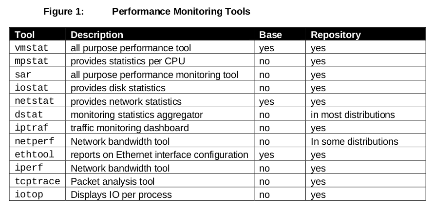

Linux System and Performance Monitoring
Table of Contents
1 linux-system-and-performance-monitoring
1.1 Performance Monitoring Introduction
1.1.1 Determining Application Type
1.1.2 Determining Baseline Statistics
1.2 Installing Monitoring Tools

1.3 Introducing the CPU
The following list outlines the priorities from highest to lowest:
- Interrupts – Devices tell the kernel that they are done processing. For example, a NIC delivers a packet or a hard drive provides an IO request（中断处理优先级别最高）
- Kernel (System) Processes – All kernel processing is handled at this level of priority.
- User Processes – This space is often referred to as “userland”. All software applications run in the user space. This space has the lowest priority in the kernel scheduling mechanism.
1.3.1 Context Switches
1.3.2 The Run Queue
1.3.3 CPU Utilization
Most performance monitoring tools categorize CPU utilization into the following categories:
- User Time – The percentage of time a CPU spends executing process threads in the user space.
- System Time – The percentage of time the CPU spends executing kernel threads and interrupts.
- Wait IO – The percentage of time a CPU spends idle because ALL process threads are blocked waiting for IO requests to complete.
- Idle – The percentage of time a processor spends in a completely idle state.
1.4 CPU Performance Monitoring
1.4.1 Using the vmstat Utility
1.4.2 Case Study: Sustained CPU Utilization
There are a high amount of interrupts (in) and a low amount of context switches. It appears that a single process is making requests to hardware devices.（触发中断次数很多但是cs很少，说明在某个进程内有很多硬件设备请求）
1.4.3 Case Study: Overloaded Scheduler
The amount of context switches is higher than interrupts, suggesting that the kernel has to spend a considerable amount of time context switching threads.（cs次数远比中断次数高很多，说明内核花费了大量时间在线程切换上）
1.4.4 Using the mpstat Utility
1.4.5 Underutilized Process Load
1.4.6 Conclusion
1.5 Introducing Virtual Memory
1.5.1 Virtual Memory Pages
1.5.2 Kernel Memory Paging
Memory paging is a normal activity not to be confused with memory swapping. Memory paging is the process of synching memory back to disk at normal intervals. Over time, applications will grow to consume all of memory. At some point, the kernel must scan memory and reclaim unused pages to be allocated to other applications.（区分于memory swapping，包括定时检查一些需要将内容写回磁盘的内存数据，以及如果内存不够时候进行内存回收。memory swapping操作是如果内存依然不够的话会将一些in-active pages置换到磁盘）
1.5.3 The Page Frame Reclaim Algorithm (PFRA)
The PFRA is responsible for freeing memory. The PFRA selects which memory pages to free by page type. Page types are listed below:
- Unreclaimable – locked, kernel, reserved pages（保留内存）
- Swappable – anonymous memory pages（匿名内存）
- Syncable – pages backed by a disk file（从磁盘文件读取并且发生修改，需要写回到文件）
- Discardable – static pages, discarded pages（内容可以直接从磁盘文件读取）
All but the “unreclaimable” pages may be reclaimed by the PFRA. There are two main functions in the PFRA. These include the kswapd kernel thread and the “Low On Memory Reclaiming”(LMR) function.
1.5.4 kswapd
The kswapd daemon is responsible for ensuring that memory stays free. It monitors the pages_high and pages_low watermarks in the kernel. If the amount of free memory is below pages_low, the kswapd process starts a scan to attempt to free 32 pages at a time. It repeats this process until the amount of free memory is above the pages_high watermark（kswapd是一个守护进程，监控两个内核变量pages_high和pages_low. 如果当前可用内存低于pages_low的话，那么会以32pages为单位进行释放直到内存高于pages_high). The kswapd thread performs the following actions:
- If the page is unmodified, it places the page on the free list.
- If the page is modified and backed by a filesystem, it writes the contents of the page to disk.
- If the page is modified and not backed up by any filesystem (anonymous), it writes the contents of the page to the swap device.
1.5.5 Kernel Paging with pdflush
1.5.6 Case Study: Large Inbound I/O
1.5.7 Conclusion
1.6 Introducing I/O Monitoring
1.6.1 Reading and Writing Data - Memory Pages
You can check the page size of your system by using the time command in verbose mode and searching for the page size:
# /usr/bin/time -v date ... Page size (bytes): 4096 ...
1.6.2 Major and Minor Page Faults
1.6.3 The File Buffer Cache
The following output is taken from the /proc/meminfo file:
# cat /proc/meminfo MemTotal: 2075672 kB lMemFree: 52528 kB Buffers: 24596 kB Cached: 1766844 kB ...
The system has a total of 2 GB (MemTotal) of RAM available on it. There is currently 52 MB of RAM "free" (MemFree), 24 MB RAM that is allocated to disk write operations (Buffers), and 1.7 GB of pages read from disk in RAM (Cached).
1.6.4 Types of Memory Pages
There are 3 types of memory pages in the Linux kernel. These pages are described below:
- Read Pages – These are pages of data read in via disk (MPF) that are read only and backed on disk. These pages exist in the Buffer Cache and include static files, binaries, and libraries that do not change. The Kernel will continue to page these into memory as it needs them. If memory becomes short, the kernel will "steal" these pages and put them back on the free list causing an application to have to MPF to bring them back in.
- Dirty Pages – These are pages of data that have been modified by the kernel while in memory. These pages need to be synced back to disk at some point using the pdflush daemon. In the event of a memory shortage, kswapd (along with pdflush) will write these pages to disk in order to make more room in memory.
- Anonymous Pages – These are pages of data that do belong to a process, but do not have any file or backing store associated with them. They can't be synchronized back to disk. In the event of a memory shortage, kswapd writes these to the swap device as temporary storage until more RAM is free ("swapping" pages).
1.6.5 Writing Data Pages Back to Disk
1.7 Monitoring I/O
1.7.1 Calculating IO’s Per Second
1.7.2 Random vs Sequential I/O
1.7.3 When Virtual Memory Kills I/O
1.7.4 Determining Application I/O Usage
1.7.5 Conclusion
1.8 Introducing Network Monitoring
1.8.1 Ethernet Configuration Settings
1.8.2 Monitoring Network Throughput
1.8.3 Individual Connections with tcptrace
The tcptrace utility provides detailed TCP based information about specific connections. The utility uses libpcap based files to perform and an analysis of specific TCP sessions. The utility provides information that is sometimes difficult to catch in a TCP stream. This information includes:
- TCP Retransmissions – the amount of packets that needed to be sent again and the total data size
- TCP Window Sizes – identify slow connections with small window sizes
- Total throughput of the connection
- Connection duration